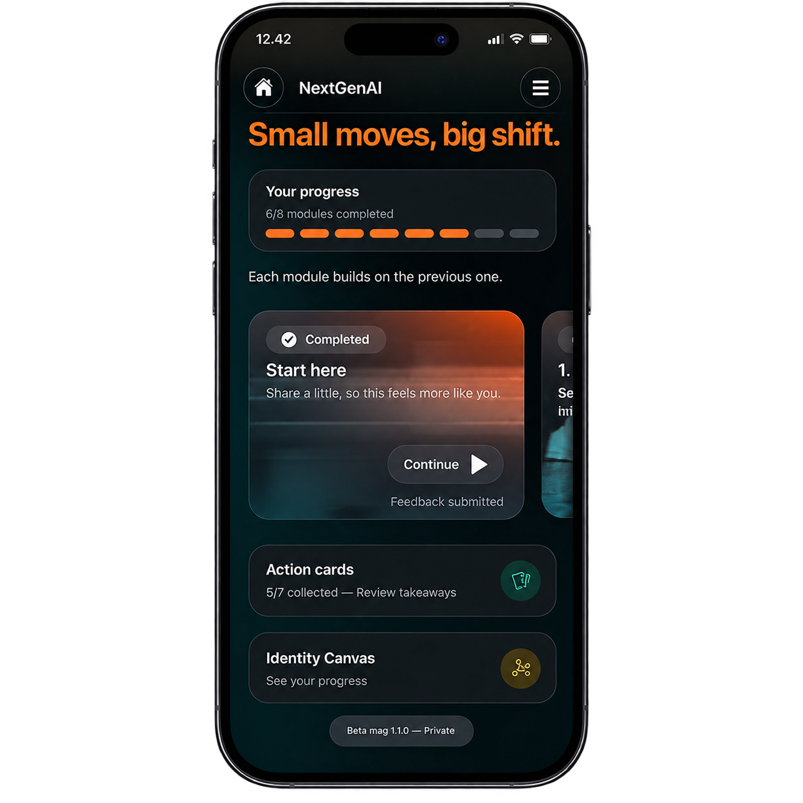

Amin Hassan
Työelämän kehittäjä
Amin työskentelee henkilöstökokemuksen, osaamisen kehittämisen ja tekoälyn parissa Goforella. Hän on tehnyt vuosia työtä yhdenvertaisemman työelämän ja nuorten uramahdollisuuksien parissa.
Aloite · työelämän ensimmäisiin vuosiin
First Five Years yhdistää henkilökohtaisen AI-valmennuksen ja tiedon siitä, missä nuorten työelämään kiinnittyminen vaikeutuu.
ensimmäistä vuotta työelämässä ovat aikaa, jolloin oma suunta, osaaminen ja paikka työelämässä rakentuvat.
01Ilmiö
Ensimmäisiin työvuosiin liittyy kysymyksiä, joihin ei ole yhtä selvää vastausta. Mihin suuntaan haluan mennä? Missä olen hyvä? Mitä minun pitäisi kehittää? Miten toimin, kun työpaikalla tulee vastaan vaikea tilanne?
alle 25-vuotiaiden työttömyysaste
pitkäaikaistyötöntä nuorta · vuonna 2008 noin 300
Lähteet: Tilastokeskus Nuorisoala
Mitä First Five Years tekee
“Mihin suuntaan menen?” “Missä olen hyvä?” “Miksi työnhaku ei etene?”
Nuori saa tukea tilanteen jäsentämiseen, vahvuuksien tunnistamiseen ja seuraavan askeleen löytämiseen.
Koottu tieto näyttää, missä työelämään kiinnittymisen ongelmat toistuvat.
Nykyiset työmarkkinatilastot kertovat usein vasta lopputuloksen. First Five Years pyrkii tuomaan näkyviin sen, mitä tapahtuu ennen sitä.
02Havainto
Keväällä 2026 joukko alle 30-vuotiaita kokeili AI-valmentajaa työelämän ensimmäisten vuosien tueksi. Valmentajan tarjoaa Adaptive Works.
AI-valmentaja on tekoälypohjainen palvelu. Käyttäjä keskustelee tekoälyn, ei ihmisvalmentajan kanssa.
käyttäjää
valmennuskeskustelua
viestiä
AI-valmentajan kanssa käsiteltiin esimerkiksi omaa suuntaa, vahvuuksia, kehitettäviä taitoja, työnhakua ja vaikeita tilanteita työpaikalla.
Samat asiat alkoivat esiintyä eri käyttäjien keskusteluissa. Niihin kuuluivat esimerkiksi oman mielipiteen pidättäminen, palautteen välttely, epäselvä päätösvalta ja vaikeiden tilanteiden hoitaminen yksin.
Pilotissa tunnistettiin kymmenen toistuvaa mallia.

Nuorelle
Yksittäinen keskustelu auttaa nuorta juuri hänen omassa tilanteessaan.
Yhteisesti
Useista keskusteluista voidaan muodostaa koottu näkymä työelämän toistuviin kitkoihin.
03Miten se toimii
Nuorelle
Valmentajan kanssa voi käsitellä omaa suuntaa, vahvuuksia, kehitettäviä taitoja, työnhakua ja työelämän tilanteita.
Yhteinen näkymä
Kun sama ilmiö esiintyy riittävän monessa keskustelussa, sitä voidaan tarkastella koottuna.
Tarkastelun kohteena ei ole yksittäinen nuori, vaan esimerkiksi työnhaussa, palveluissa, johtamisessa tai työpaikan käytännöissä toistuva ongelma.
04Seuraava kokeilu
Slush-vapaaehtoista saa AI-valmentajan käyttöönsä
Nuorelle
Slushin vapaaehtoiset saavat AI-valmentajan käyttöönsä työelämään, omaan suuntaan, osaamiseen ja kehittymiseen liittyvien kysymysten käsittelyyn.
Yhteinen näkymä
Laajempi käyttöönotto antaa mahdollisuuden tarkastella, mitkä kysymykset ja ongelmat toistuvat eri käyttäjillä.
06Taustalla
Amin Hassan
Amin työskentelee henkilöstökokemuksen, osaamisen kehittämisen ja tekoälyn parissa Goforella. Hän on tehnyt vuosia työtä yhdenvertaisemman työelämän ja nuorten uramahdollisuuksien parissa.

Heikki Leskinen
Heikki on sarjayrittäjä ja strategiakonsultti, joka on keskittynyt uuden sukupolven johtamiseen ja nuorten osaajien tuomiseen osaksi yritysten kehittämistä. Hän on perustanut The NextGen Projectin ja vetää NextGenAI-ohjelmaa.
Yhteistyössä Adaptive Works
First Five Yearsin AI-valmentajan tarjoaa Adaptive Works. Yhteistyössä kehitetään nuorelle tarjottavaa valmennusta sekä tapaa tunnistaa keskusteluista laajempia työelämän ilmiöitä.
07Mukaan
Etsimme organisaatioita, jotka työskentelevät nuorten, koulutuksen, työn tai työllisyyspalveluiden parissa.
Rahoitusta tarvitaan mallin kehittämiseen, toteuttamiseen, tutkimukseen ja arviointiin.
Mukaan tarvitaan osaamista erityisesti nuorten työllisyydestä, mittaamisesta, tutkimuksesta, tietosuojasta ja tekoälystä.
08Pelisäännöt
AI-valmentajaa ei esitetä ihmisenä. Käyttäjälle kerrotaan selkeästi, että vastaukset tuottaa tekoäly.
AI-valmentajan tehtävä on tuottaa arvoa nuorelle. Palvelun käyttö ei saa riippua siitä, käytetäänkö keskustelusta syntyvää tietoa laajempaan tarkasteluun.
Palvelu ei anna käyttäjälle työelämävalmiuspisteitä, persoonallisuusarvioita tai ennustetta työllistymisestä.
Laajempi tilannekuva perustuu useista keskusteluista muodostettuihin koottuihin ilmiöihin.
Vetäytyminen datan jatkokäytöstä ei vaikuta AI-valmentajan käyttöön.
Käyttäjien keskusteluista ei rakenneta myytävää aineistoa kolmansille osapuolille.
09Yhteys
Etsimme kumppaneita, rahoittajia sekä tutkimus- ja substanssiosaamista mallin seuraaviin vaiheisiin.